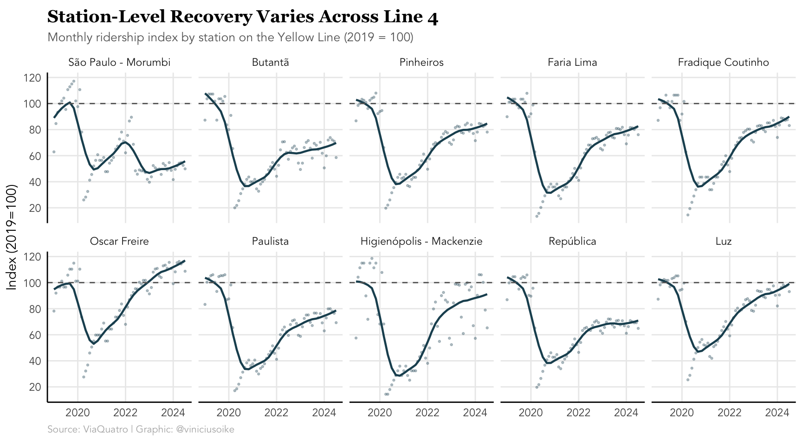

The COVID-19 pandemic fundamentally disrupted urban mobility patterns worldwide. São Paulo’s metro system, which serves millions of daily passengers across six lines, provides a valuable case study for understanding how public transit ridership has evolved through the pandemic and recovery periods. This analysis examines ridership data from 2019 through mid-2023 to track the system’s recovery trajectory.
Overall System Recovery
Despite gradual improvements since the depths of the pandemic, São Paulo’s metro system remains well below pre-pandemic ridership levels.
The chart reveals a dramatic collapse in ridership during March-April 2020, when monthly entries plummeted to roughly 25 million—less than 20% of pre-pandemic levels. While the system has steadily recovered, reaching approximately 105 million monthly entries by mid-2023, this still represents a significant 30% shortfall compared to the 130-140 million entries recorded in early 2019.
Weekday Ridership by Line
Breaking down the recovery by individual metro lines reveals how different parts of the network have been affected.
The stacked area chart shows that weekday ridership patterns closely mirror the overall system trend, with all lines experiencing similar proportional declines. Lines 1 (Blue), 3 (Red), and 5 (Lilac) represent the largest shares of weekday ridership, reflecting their role as major commuter corridors.
Recovery Patterns Across Lines and Day Types
Examining ridership indexed to 2019 levels reveals important differences in how different lines and day types have recovered.
A clear pattern emerges: weekend ridership (Saturdays and Sundays) has recovered more strongly than weekday commuting patterns, with several lines approaching or even exceeding 2019 levels on Sundays. This suggests that while recreational and leisure travel has rebounded, traditional work commutes remain depressed—likely due to the persistence of remote and hybrid work arrangements. Line 5 (Lilac) shows particularly volatile weekend patterns, potentially reflecting its service area’s demographic and land use characteristics.
Station-Level Analysis: Line 4 (Yellow)
Zooming into individual stations on Line 4 reveals spatial heterogeneity in the recovery process.

Station-level data reveals significant variation in recovery trajectories. Some stations, like Oscar Freire and Paulista—located in São Paulo’s high-end commercial and business districts—show stronger recovery, potentially reflecting their role as destinations for both work and leisure activities. In contrast, primarily residential stations show more modest recovery, consistent with reduced commuting demand. Notably, several stations have surpassed their 2019 ridership levels by 2023, suggesting localized growth or shifting travel patterns within the metro network.
Implications
The persistent gap between current and pre-pandemic ridership levels reflects fundamental changes in urban mobility behavior. The stronger recovery in weekend versus weekday ridership indicates that remote and hybrid work arrangements have become structural features of São Paulo’s labor market, not temporary pandemic responses. This shift has significant implications for transit planning, fare revenue projections, and the broader urban economy that depends on commuter spending in business districts.